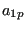
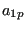

Next: *CORRELATION LENGTH Up: Input deck format Previous: *CONTACT PRINT Contents
Keyword type: step
This option is used to change the iteration control parameters. It should only be used by those users who know what they are doing and are expert in the field. A detailed description of the convergence criteria is given in Section 6.10. There are two, mutually exclusive parameter: PARAMETERS and RESET. The RESET parameter resets the control parameters to their defaults. The parameter PARAMETERS is used to change the defaults. It can take the value TIME INCREMENTATION, FIELD, LINE SEARCH, NETWORK, CFD or CONTACT. If the TIME INCREMENTATION value is selected, the number of iterations before certain actions are taken (e.g. the number of divergent iterations before the increment is reattempted) can be changed and effect of these actions (e.g. the increment size is divided by two). The FIELD parameter can be used to change the convergence criteria themselves.
LINE SEARCH can be used to change the line search parameters (only for face-to-face penalty contact). The line search parameter scales the correction to the solution calculated by the Newton-Raphson algorithm such that the residual force is orthogonal to the correction. This requires the solution of a nonlinear equation, and consequently an iterative procedure. In CalculiX this procedure is approximated by a linear connection between:
With the NETWORK parameter the convergence criteria for network
iterations can be changed. The parameters  ,
,  and
express the fraction of the mean energy balance, mass balance and element
balance the energy balance residual, the mass balance residual and the
element balance residual is not allowed to exceed, respectively. The parameters
and
express the fraction of the mean energy balance, mass balance and element
balance the energy balance residual, the mass balance residual and the
element balance residual is not allowed to exceed, respectively. The parameters  ,
,
 , and is the fraction of the change in temperature,
mass flow, pressure and geometry since the beginning of the increment the
temperature, mass flow, pressure and geometry change in the actual network
iteration is not allowed to exceed, respectively. The same applies to the
parameters
, and is the fraction of the change in temperature,
mass flow, pressure and geometry since the beginning of the increment the
temperature, mass flow, pressure and geometry change in the actual network
iteration is not allowed to exceed, respectively. The same applies to the
parameters  ,
,  , , ,
, , ,  , and
, and
 , except that they are absolute values and not
fractions, e.g. the mean enery balance residual should not exceed
, except that they are absolute values and not
fractions, e.g. the mean enery balance residual should not exceed  etc. Therefore they have appropriate units.
etc. Therefore they have appropriate units.
With the CFD parameter the maximum number of iterations in certain
fluid loops can be influenced. A fluid calculation within CalculiX is
triggered at the start of a new mechanical increment. This increment is
subdivided into fluid increments based on the physical fluid properties. For
each fluid increment iterations are performed. Usually, iterations are performed until convergence
of the fluid increment or until the maximum allowed number of iterations is
reached. This is the first parameter  (“transient”). In fluid
calculations the unknowns in the equation systems are the quantities
(velocity..) at the element centers. The values at the face centers and the
gradients are calculated based on these element center quantities. In case the
mesh is not orthogonal, iterations have to be performed. The number of these
iterations is expressed by (“geometry”) and (taking
non-orthogonality into account in the pressure correction equation,
“pressure”). This is the second and third parameter. For a perfectly
rectangular grid these values can be set to zero. Finally, the parameter
specifies how many coupled pressure-temperature iterations have to be
performed. For incompressible flow the default value of 1 should not be
changed. For inviscid compressible flow this value
may have to be increased up to 4, whereas for viscid compressible flow this
value has rarely to be changed.
(“transient”). In fluid
calculations the unknowns in the equation systems are the quantities
(velocity..) at the element centers. The values at the face centers and the
gradients are calculated based on these element center quantities. In case the
mesh is not orthogonal, iterations have to be performed. The number of these
iterations is expressed by (“geometry”) and (taking
non-orthogonality into account in the pressure correction equation,
“pressure”). This is the second and third parameter. For a perfectly
rectangular grid these values can be set to zero. Finally, the parameter
specifies how many coupled pressure-temperature iterations have to be
performed. For incompressible flow the default value of 1 should not be
changed. For inviscid compressible flow this value
may have to be increased up to 4, whereas for viscid compressible flow this
value has rarely to be changed.
Finally, the CONTACT parameter is used to change defaults in the face-to-face penalty contact convergence algorithm (cf. Section 6.10.2). This relates to
First line:
There are no subsequent lines if the parameter RESET is selected.
Following lines if PARAMETERS=TIME INCREMENTATION is selected:
Second line:
Third line:
Following line if PARAMETERS=FIELD is selected:
Second line:
Following line if PARAMETERS=LINE SEARCH is selected:
Second line:
Following line if PARAMETERS=NETWORK is selected:
Second line:
Third line:
Here, [M], [L], [T] and [t] are the units for mass, length, temperature and time.
Following line if PARAMETERS=CFD is selected:
Second line:
Following line if PARAMETERS=CONTACT is selected:
Second line:
Example: *CONTROLS,PARAMETERS=FIELD 1.e30,1.e30,0.01,,0.02,1.e-5,1.e-3,1.e-8
leads to convergence in just one iteration since nearly any residuals are accepted for convergence ( and .
Example files: beammrco.